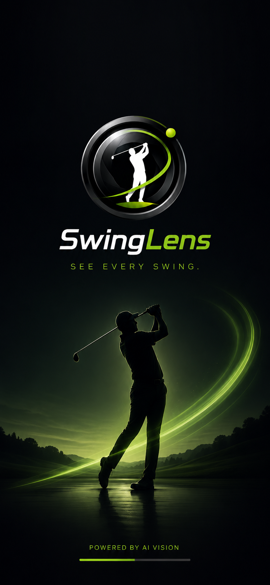

POWERED BY ORI CO.
看見每一次揮桿，不再錯過任何細節。
SwingLenz 是為高爾夫練習打造的 iPhone 錄影助手。它會自動偵測揮桿、開始錄影、裁切片段並立刻回放，讓你專注揮桿，而不是按快門。
- AI 自動偵測揮桿並錄影
- 片庫即時回顧與分享
- 雙裝置無線即時重播

Auto Capture
偵測揮桿後自動開始
Replay Ready
揮桿後立即看片回放
CORE FEATURES
不是錄影工具，而是更完整的練習流程。
從準備揮桿到回看修正，SwingLenz 把每一段體驗串成一條順的動線，讓練習更像訓練，而不是整理素材。
AI 自動捕捉每一桿
開啟偵測後，系統會在你進入揮桿動作時自動開始錄影，結束後裁切出完整片段，全程不必碰手機。
片庫立即回顧
最近的揮桿片段會自動保存，支援慢動作播放與一鍵分享給教練或同伴。
雙裝置即時重播
把第二台裝置放在球位旁，揮桿完成後就能自動接收影片並全螢幕播放。
練習場環境優先
首次進入會請求相機、藍牙與本地網路權限，連線後可在戶外穩定使用。
EXPERIENCE FLOW
為高爾夫動作分析而設計的三步節奏。
1
架好手機，進入待機
相機進入全螢幕預覽後，AI 會持續偵測揮桿姿勢，等待你真正開始動作。
2
揮桿當下自動錄製
不需要倒數、不需要手動停止，系統會在正確時機擷取完整揮桿段落。
3
立刻回放、比較、修正
回到片庫或切到顯示模式，剛打完就能看，讓身體記憶和影像資訊同步。
SWINGLENZ PRO
為需要更深分析與更快回饋的球友而升級。
Pro 版本聚焦在兩件事：看得更慢，以及看得更快。從 240fps 慢動作到雙裝置即時重播，都是為了讓修正更即時。
你會解鎖的能力
- 240fps 慢動作回放，放大擊球瞬間
- 雙裝置顯示模式，自動接收並循環播放
- 未來進階數據與雲端功能優先開放
Practice Scenario
一台拍，一台播
Camera 裝置負責捕捉揮桿，Display 裝置站在球位旁負責播放。你打完走一步，就能直接看到剛剛那一桿。
FAQ
幾個使用前會在意的問題。
一定要網路才可以用嗎？
不用。雙裝置重播是以本地連線為主，戶外練習場也能完成核心體驗。
這是只給教練用的工具嗎？
不是。從自我練習到教學現場都適合，尤其適合想減少手動錄影流程的球友。
第一次開啟會要求哪些權限？
相機、藍牙與本地網路。這些權限分別用於錄影、雙機配對與即時傳送片段。